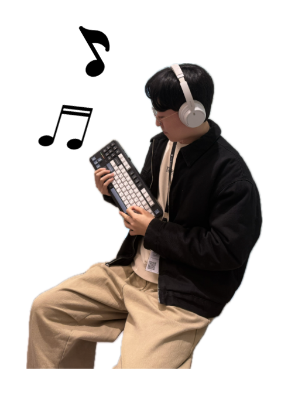
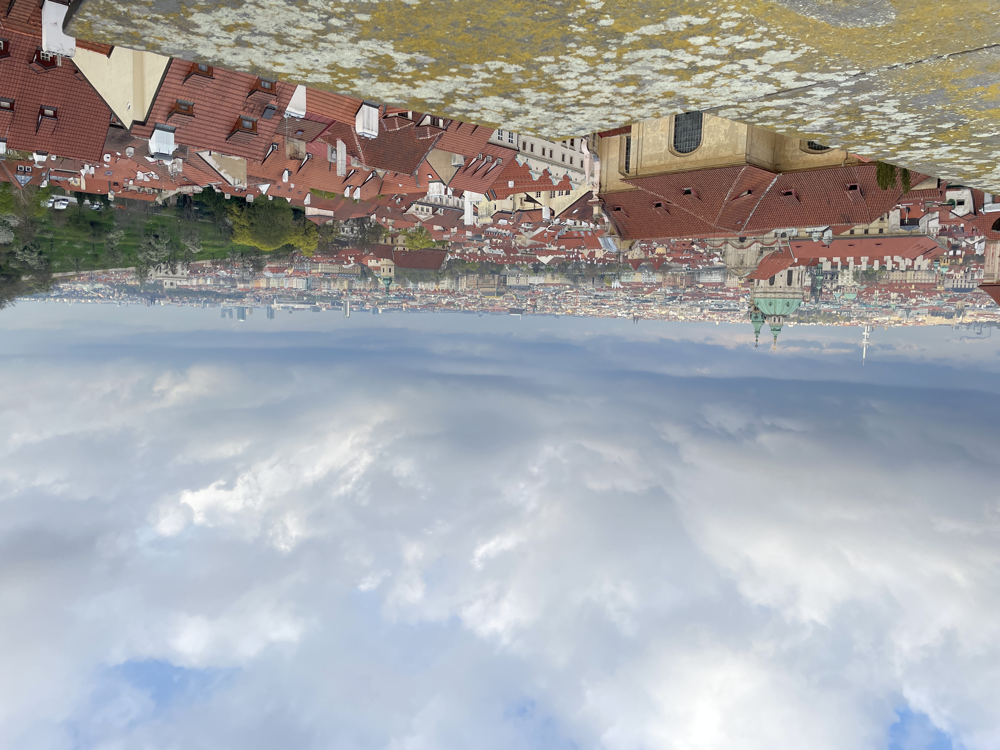
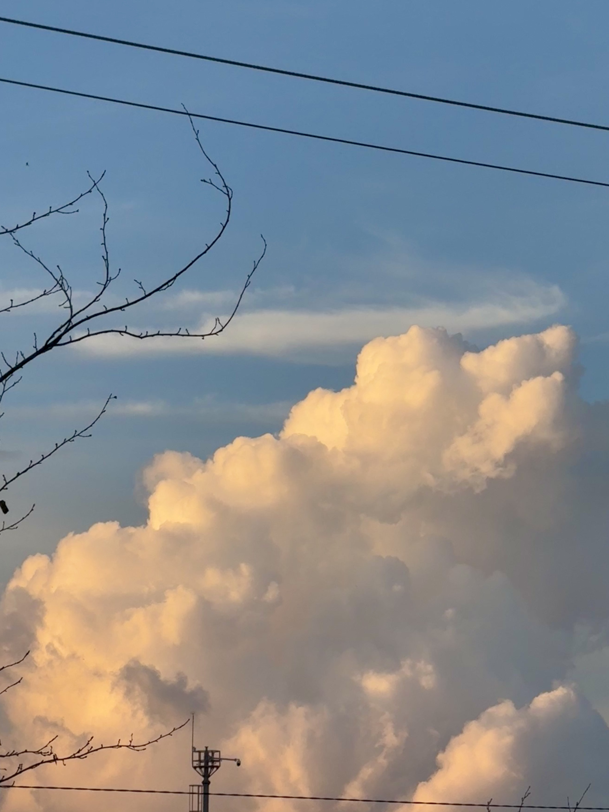
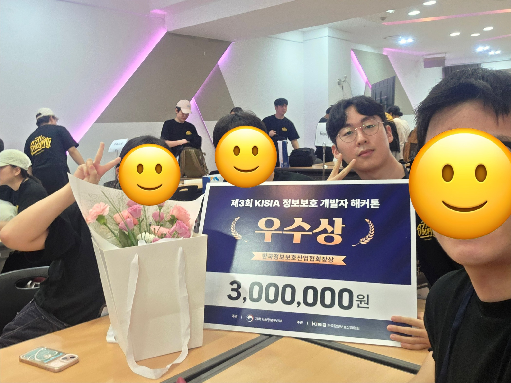
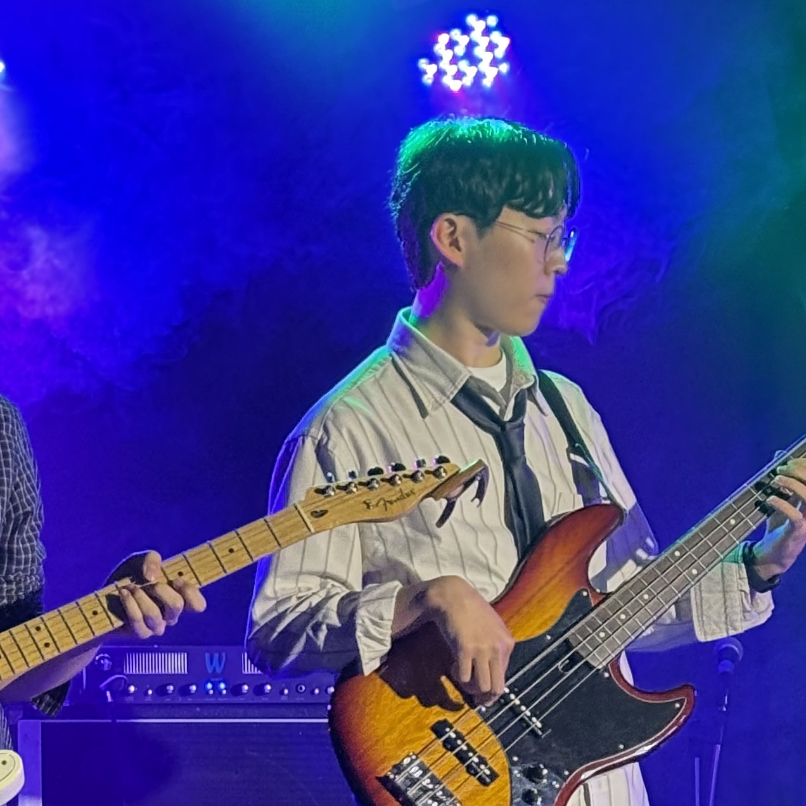

해리포터
어릴 때 해리포터를 좋아해 정주행을 정말 많이 했었다.

8기 BE 아론입니다. 베이스 기타 치는거 좋아해요
안녕하세요! 우아한테크코스 8기 백엔드 과정을 진행하고 있는 아론입니다.
정보보안 동아리를 했었고 보안 공부를 하다가 개발에 더 흥미를 느껴 현재 백엔드 개발을 하고 있습니다.
개발 외에는 베이스 기타를 치며 스트레스를 풀고, 일식을 좋아합니다.
블로그나 GitHub에서 학습 기록을 확인하실 수 있습니다:
GitHub
| 이름 | 아론 |
|---|---|
| MBTI | ISFP |
| 취미 | 베이스 기타 |
| 좋아하는 음식 | 일식(초밥, 돈카츠, 덮밥) |
기억에 남는 순간들





어릴 때 해리포터를 좋아해 정주행을 정말 많이 했었다.
2013년 존 카니 감독의 음악 영화. 뉴욕 길거리에서 음악을 통해 서로의 상처를 치유해 가는 이야기다. 감명깊게 본 영화로, 마음속 휴식이 필요할 때 다시 찾아보곤 한다. 음악과 영상미가 정말 아름답다.
오늘 새롭게 배운 것들을 기록합니다.
header, nav, main, section, article, footer 등 시멘틱 태그의 역할과 사용법을 배웠다.